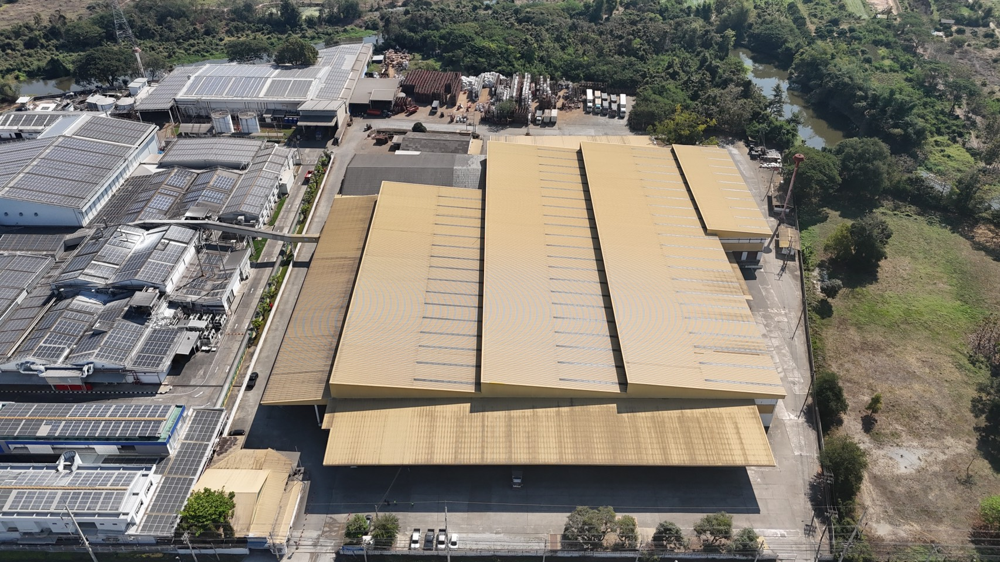

AIB Audit คืออะไร — เกณฑ์คะแนนเป็นแบบไหน
AIB Audit เป็นการตรวจมาตรฐานความปลอดภัยอาหารของ AIB International ที่ PepsiCo และคู่ค้าในเครือใช้ประเมินคลัง/โรงงาน
แบ่งเป็น 5 หมวดตรวจ หมวดละ 200 คะแนน รวมเต็ม 1,000 คะแนน — ผ่านเกณฑ์ที่ 700 คะแนนขึ้นไป, ตั้งแต่ 850 ขึ้นไปถือว่าอยู่ในระดับดีมาก
และ 900+ ถือเป็นมาตรฐานที่สูงมาก ระบบนี้ใช้ติดตาม "finding" หรือจุดที่ตรวจพบว่าไม่ผ่านเกณฑ์ในแต่ละรอบตรวจ เพื่อลดคะแนนที่เสียไปในรอบถัดไป
Finding ทั้งหมด
—
AIB Audit
—
Safety Audit
—
เสร็จแล้ว
—
ค้างดำเนินการ
—
เกินกำหนด
—
จุดที่พบปัญหา (Heat Map) — พื้นที่คลังลำพูน DC7171

กำลังโหลดข้อมูล...
สถานะ Finding
Finding ตามหน่วยงาน
เรียงจากหน่วยงานที่ค้างเยอะสุดก่อน · ■ ค้าง ■ เสร็จแล้ว
Finding ล่าสุด
Finding ทั้งหมด
—
รอดำเนินการ/ยังไม่เสร็จ
—
เสร็จแล้ว
—
เกินกำหนด (Overdue)
—
% ปิด Finding
—
แผนที่จุดที่พบปัญหา (AIB/Safety)
กำลังโหลด...
ดูแผนที่เต็มจอ →
| # | เรื่อง-ปัญหา | โซน/ผู้รับผิดชอบ | ประเภท | สถานะ | กำหนดเสร็จ | Actions |
|---|
แสดง 0 รายการ